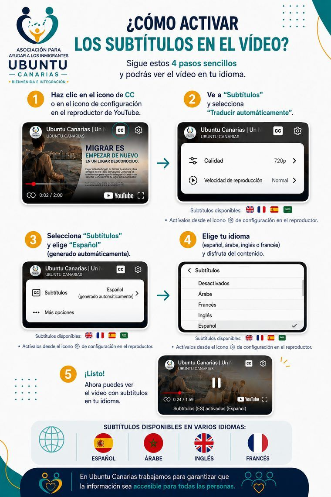

Misión
Acompañar a personas migrantes y sus familias en su proceso de integración social, laboral y comunitaria en Canarias, ofreciendo orientación, formación y apoyo psicosocial desde el respeto a su autonomía y su dignidad.
Creemos en una integración digna, participativa y transformadora.
Para nosotros la integración no es un trámite que se resuelve con un papel o un contrato, sino un proceso que se construye día a día, junto a la persona y a su ritmo. Por eso combinamos la orientación práctica —jurídica, laboral, formativa— con un acompañamiento psicosocial que reconoce lo que cada persona trae consigo: su historia, sus capacidades y su derecho a decidir sobre su propia vida. Trabajamos para que quien llega no sea un simple receptor de ayuda, sino protagonista activo de su propio proceso, y para que la sociedad de acogida también se transforme en el camino, aprendiendo a mirar la migración como una oportunidad y no como un problema que gestionar.

Subtítulos disponibles: 


 · Actívalos desde el icono de ajustes del reproductor
· Actívalos desde el icono de ajustes del reproductor

Ubuntu Canarias nace del encuentro entre personas que, desde distintos lugares y trayectorias, comparten una misma convicción: que la acogida y la integración se construyen acompañando, no desde despachos ajenos a la realidad de quien llega.
La asociación se constituye en Las Palmas de Gran Canaria, impulsada por cuatro socias y socios fundadores, como respuesta directa a las necesidades que el equipo ha visto, escuchado y trabajado durante años de intervención social, orientación laboral y apoyo psicosocial a personas migrantes en el archipiélago.
Empezamos a tejer red con entidades, administraciones y ciudadanía, con la vocación de crecer sin perder nunca la cercanía y la escucha con la que nacimos.
Acompañar a personas migrantes y sus familias en su proceso de integración social, laboral y comunitaria en Canarias, ofreciendo orientación, formación y apoyo psicosocial desde el respeto a su autonomía y su dignidad.
Una sociedad canaria donde la migración se entienda como una oportunidad de enriquecimiento mutuo, y donde toda persona, sea cual sea su origen, tenga acceso real a construir un proyecto de vida propio.
Actuamos con rigor y rendición de cuentas ante las personas a las que acompañamos, nuestras entidades colaboradoras y la sociedad canaria en su conjunto.
Ubuntu Canarias se rige por una Junta Directiva elegida por la Asamblea de socias y socios, responsable de velar por el cumplimiento de nuestros Estatutos y por el buen uso de los recursos de la asociación.
Creemos que la confianza se construye mostrando abiertamente quiénes somos, cómo nos organizamos y de dónde proceden nuestros fondos. Por eso ponemos a disposición de cualquier persona nuestra información legal y de gobierno.
Fundé Ubuntu Canarias para construir el proyecto con el que siempre soñé: acompañar a personas migrantes desde la experiencia vivida, no solo desde la teoría.


Escuchamos sin juicios para comprender cada historia y responder a necesidades reales.

Caminamos junto a cada persona fomentando su autonomía y sus propias decisiones.

Valoramos la diversidad cultural como una riqueza que construye comunidades más humanas.
Actuamos con honestidad y responsabilidad, rindiendo cuentas a las personas y a la sociedad.

Colaboramos con entidades, administraciones y ciudadanía para multiplicar nuestro impacto.
Nadie llega solo. Nadie se integra solo. Lo hacemos juntos, con respeto y esperanza.
Un equipo diverso, comprometido y cercano.
Trabajamos junto a Casa África, instituciones públicas y organismos de África Occidental en la gestión integral y humana de los flujos migratorios.